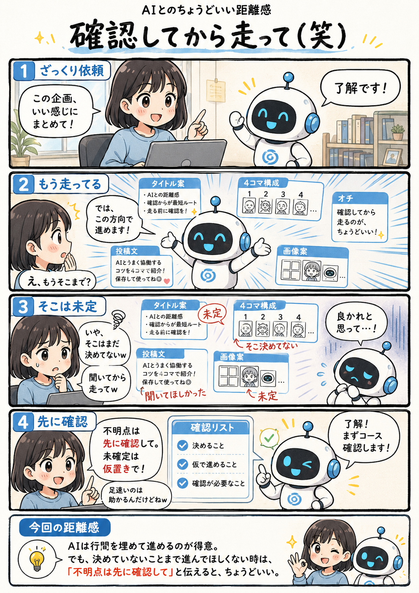

#048
確認してから走って（笑）
AIの「たぶんこうですよね？」が速すぎる。

メモ
AIは曖昧な依頼でも、できるだけ役に立とうとして前提を補いながら進めることがあります。早く形にしてくれるのは便利ですが、その前提がこちらの意図と違うと、後から戻す手間も増えてしまいます。
特に企画、文章、デザインのように判断の余地がある作業では、「そこは聞いてほしかった」というズレが起きやすくなります。
まだ決めていない部分がある時は、「不明点は先に確認して」「未確定は仮置きで」と添えておくと、AIの速さを活かしながら進めやすくなります。
今回の距離感
AIは行間を埋めて進めるのが得意。でも、決めていないことまで進んでほしくない時は、「不明点は先に確認して」と伝えると、ちょうどいい。